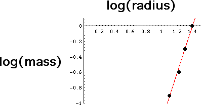

Here are the results of an experiment.
| number of beans | mass | diameter | radius | log(radius) | log(mass) |
| 64 | 1 | 49 | 24.5 | 1.39 | 0 |
| 32 | 0.5 | 40 | 20 | 1.30 | -0.30 |
| 16 | 0.25 | 33 | 16.5 | 1.22 | -0.60 |
| 8 | 0.125 | 25 | 12.5 | 1.10 | -0.90 |
Using a calculator with linear regression capability, this data gives a slope of 3.1. (Why is this too high?) In the graph of log(mass) vs. log(radius), we see how well the points fit a straight line and estimate the slope as 3.0.
|  |
Return to Samples